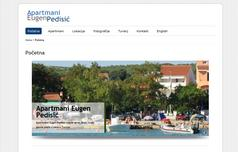
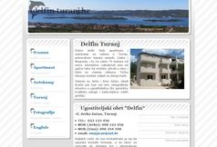
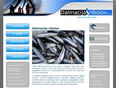
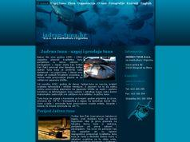
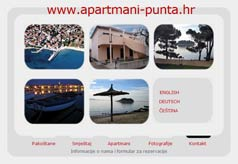
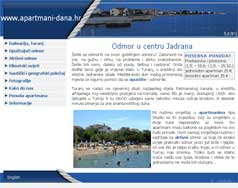
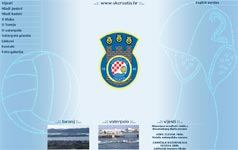
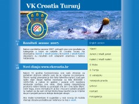

Cjelokupni dizajn ovog web site-a (dizajn elemenata, izbor boja i fontova, skripte i sve ostalo) sam napravio sam. Ako netko želi, može kopirati bilo koji dio ili skriptu (za izbornik, za foto galeriju), ali molim da mi e-mailom to javi i objasni za što će koristiti taj element. Ako bude potrebno, mogu mu čak i pomoći implementirati skripte i objasniti princip rada.
Cijeli site je izrađen u DHTML-u (kombinacija tehnologija HTML, CSS i Javascript), tako da za pregledavanje nije potreban nikakav plug-in za browsere. Čak je i sam kôd stranica napravljen na način da se što više omogući kompatibilnost sa starijim browserima. Znači, za surfanje ovim stranicama potreban je bilo koji browser sa podrškom za Javascript i CSS (svi izašli u zadnjih 4-5 godina). Napredno programiranje u Javascriptu mi omogućava biblioteka jQuery. Pri izradi sam izbjegavao upotrebu bespotrebnih slika, tako da bi i posjetitelji koji surfaju preko modemskih veza trebali osjetiti da su stranice dosta "lakše" od prosjeka hrvatskog weba (na kojemu je teško naći stranicu bez barem jednog Flash bannera i navigacijskih izbornika sa slikama umjesto teksta).
 Apartmani Eugen Pedisić se nalaze iznad plaže u Turnju u blizini centra mjesta. Ovo je moj prvi projekt odrađen u Wordpressu i moram priznati da CMS funkcionira odlično i kao platforma za male web stranice. Stranica je izrađena u veljači 2012.
 Ugostiteljski obrt Delfin, Turanj oglašava svoje apartmane i autokamp u Turnju. Vlasnici su Jerko i Ema Jačan, mladi bračni par koji već ima iskustva u ugostiteljstvu, a lokacija kuće garantira tihi i ugodni odmor u blizini centra mjesta i plaže. Stranice se nalaze na domeni www.delfin-turanj.hr i objavljene su u kolovozu 2010. a trenutno više nisu aktivne.
 Dalmacija ribolov, d.o.o. se bavi ulovom i prodajom sitne plave ribe, prvenstveno srdele i inćuna. Većina ulova se koristi kao hrana za tune u uzgajalištu Jadran tune (čiji su suvlasnici), a ostatak se plasira na tržište za preradu. Adresa stranice je www.dalmacija-ribolov.hr i objavljena je u lipnju 2010. godine.
 Jadran tuna, d.o.o. za marikulturu i trgovinu je jedan od najuspješnijih hrvatskih izvoznika tune, uglavnom na japansko tržište. Bave se ulovom, uzgojem i prodajom plavoperajne tune. Stranica koju sam izradio za njih sadrži informacije o firmi, proizvodnji i njihovoj ribarskoj floti, a nalazi se na www.jadran-tuna.hr. Izrađena je tijekom listopada 2009.
 Moj slijedeći projekt je bila također turistička stranica, izrađena za mladu obitelj iz Pakoštana koja je odlučila svoje apartmane oglašavati na webu. Stranice se nalaze na adresi www.apartmani- punta.hr, a izrada je dovršena u ožujku 2007.
 Prve komercijalne stranice koje sam izradio možete pogledati na www.apartmani-dana.hr. Radi se o turističkim stranicama obitelji Pedisić iz Turnja, koja se već dugo bavi turizmom i željela je proširiti svoju prisutnost oglašavanjem na Internetu. Stranica je bila gotova u ožujku 2006, a njihovo iskustvo je bilo vrlo pozitivno: već mjesec dana nakon objave stranica imali su toliko rezervacija da im se izrada stranica isplatila. Druga sezona nakon objave stranica donijela je neočekivano dobre rezultate - 80% gostiju je za apartmane doznalo preko ovih stranica.
Moj prvi projekt na Internetu je
započet 2003. godine. Radi se o stranicama lokalnog kluba u kojem sam trenirao vaterpolo i kojem i sad pokušavam
pomoći koliko mogu.
Stranice se nalaze na adresi www.vkcroatiaturanj.hr.

U ljeto 2007. obnovio sam dizajn ovih stranica, uglavnom zbog preglednosti sadržaja i da dodam malo moderniji duh
stranicama svoga prvog projekta zbog kojeg sam zavolio web dizajn i puno naučio. Osim toga, nakon tri godine
zbog tehnološke smjene monitora sa CRT na LCD porasla je rezolucija i redovi teksta na starim stranicama su postajali sve duži i teže čitljivi.
Pred ljeto 2012. cijeli site je prebačen na Wordpress CMS bez izmjene dizajna i funkcionira jako dobro. CMS nam je omogućio da više autora
sudjeluje u stvaranju sadržaja, a uz to je moguće i dodati sadržaj u hodu s mobitela. Nakon uvođenja imali smo vijest o rezultatu i kratak
sažetak za sve utakmice u sezoni. Novi autori su jako brzo i bez uputa počeli koristiti CMS sustav.
Ako vam se sviđa dizajn ovih stranica, ili me želite angažirati za izradu web stranica pogledajte stranice koje sam do sada izradio. U slučaju da ste zainteresirani za izradu weba, mogu vam ponuditi brzu izradu stranica koje će imati dizajn prilagođen namjeni stranice, pomoć pri registraciji domene i postavljanju stranica na server. Ako bi se radilo o osobnim stranicama ili stranicama sa turističkom ponudom moguće je besplatno registrirati TLD .hr domenu, a s obzirom na to da se današnje cijene servera za smještaj stranica kreću ispod 50 kn godišnje možete računati na punu uslugu po vrlo prihvatljivoj cijeni. Ako ste zainteresirani, slobodno pošaljite bilo kakva pitanja na ili na GSM: 098 642 713.
Osim cjelokupne izrade weba mogu vam ponuditi i redizajn već postojećih (a zastarjelih) stranica. S obzirom na to da su stranice sa turističkom ponudom u Hrvatskoj većinom rađene na brzinu i sve su skoro identične (u prijevodu: jako loše), mislim da takve stranice rade antireklamu svojim oglašivačima: posjetitelj takvih stranica vlasnika podsvjesno doživljava kao traljavu osobu bez osobite brige za dojam koji ostavlja i usluge koje nudi putem Interneta.
Što se tiče sadržaja samih stranica ja mogu napisati tekstove na hrvatskom i engleskom jeziku (bez potrebe lektoriranja tekstova jer znam č&ć i ije&je ;-) , grafiku na stranicama, a ako je potrebno mogu i izraditi fotografije potrebne za prezentaciju sadržaja.
Ako nekoga zanimaju osnove izrade weba i funkcioniranja Interneta, može pročitati tekst Izrada web stranica. Radi se o mom seminarskom radu iz kolegija Primjena računala. Cilj seminara je bio prezentirati izradu web stranica početnicima. Iako je napisan 2002. g. tekst je još uvijek koristan početnicima zbog svog pristupa, a i što se tiče Internet tehnologija stvari još uvijek isto funkcioniraju. Jedina mana teskta je što opisuje izradu stranica u Front Page-u, programu koji baš i nije najbolji za izradu web stranica (ali kako je fakultet tada imao licencu samo za FP, tako je naglasak stavljen na njega). Trenutno bih za početnike preporučio N|vu - odlično besplatno razvojno okruženje za web dizajn.
| programiranje / kodiranje .:. | HTML (DHTML) |
.:. | CSS |
.:. | Javascript |
.:. | SVG |
.:. | XML |
skriptiranje / animacija .:. | jQuery |
dizajn / ilustracija / grafika .:. | Photoshop |
.:. | Inkscape |